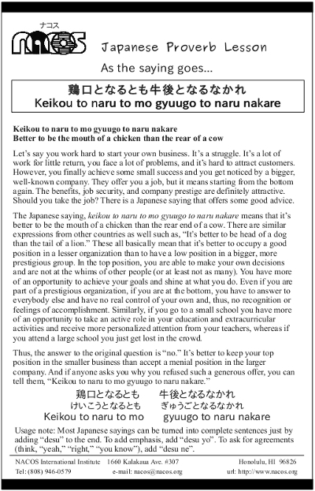

Keikou to naru to mo gyuugo to naru nakare
Better to be the mouth of a chicken than the rear of a cow
Let’s say you work hard to start your own business. It’s a struggle. It’s a lot of work for little return, you face a lot of problems, and it’s hard to attract customers. However, you finally achieve some small success and you get noticed by a bigger, well-known company. They offer you a job, but it means starting from the bottom again. The benefits, job security, and company prestige are definitely attractive. Should you take the job? There is a Japanese saying that offers some good advice.
The Japanese saying, keikou to naru to mo gyuugo to naru nakare means that it’s better to be the mouth of a chicken than the rear end of a cow. There are similar expressions from other countries as well such as, “It’s better to be head of a dog than the tail of a lion.” These all basically mean that it’s better to occupy a good position in a lesser organization than to have a low position in a bigger, more prestigious group. In the top position, you are able to make your own decisions and are not at the whims of other people (or at least not as many). You have more of an opportunity to achieve your goals and shine at what you do. Even if you are part of a prestigious organization, if you are at the bottom, you have to answer to everybody else and have no real control of your own and, thus, no recognition or feelings of accomplishment. Similarly, if you go to a small school you have more of an opportunity to take an active role in your education and extracurricular activities and receive more personalized attention from your teachers, whereas if you attend a large school you just get lost in the crowd.
Thus, the answer to the original question is “no.” It’s better to keep your top position in the smaller business than accept a menial position in the larger company. And if anyone asks you why you refused such a generous offer, you can tell them, “Keikou to naru to mo gyuugo to naru nakare.”
Usage note: Most Japanese sayings can be turned into complete sentences just by adding “desu” to the end. To add emphasis, add “desu yo”. To ask for agreements (think, “yeah,” “right,” “you know”), add “desu ne”.

| © 1995-2013 NACOS International Institute. All Rights Reserved. |